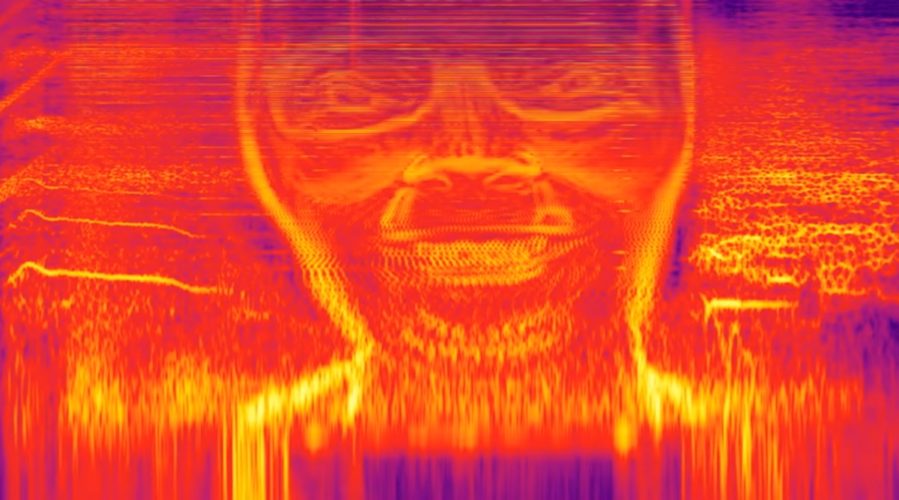
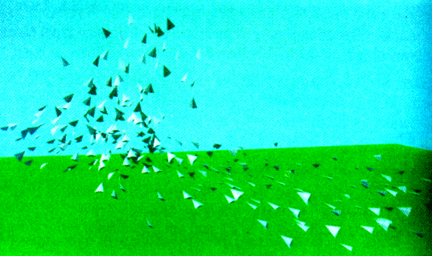
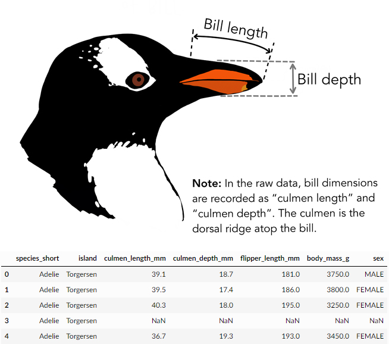
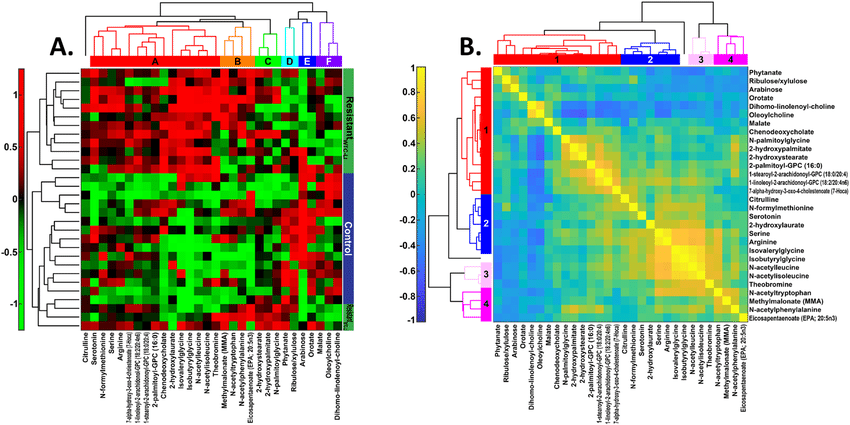
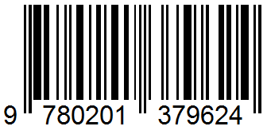
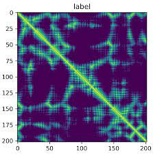
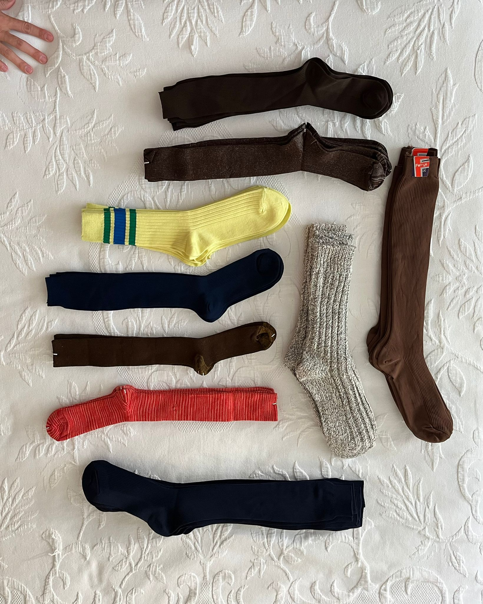

0
Resumen
Aphex Twin utilizaba algoritmos para generar los espectrogramas de sus canciones de manera inversa, introduciendo la imagen de su cara en la gráfica para conseguir sonidos inesperados.
Este proceso inverso hace patente nuestra desconexión con las lógicas de la inteligencia artificial, aunque no tenemos por qué verlo como un error sino como una herramienta para proyectar.

En cualquier proceso de proyecto, observamos la realidad para encontrar patrones comunes entre distintas situaciones. La inteligencia artificial nos permite analizarla con un nivel de abstracción similar al de una persona, manejando una cantidad de datos inabarcable de otra forma.
Los modelos de inteligencia artificial actuales aún necesitan que la entrada de datos sea homogénea: que situaciones distintas se traduzcan a un mismo formato.
Nuestro monstruo propone un método para la codificación de una plaza y la posterior decodificación de los resultados del aprendizaje de la Inteligencia Artificial.
El proceso consta de cuatro pasos: obtención de datos, simulación, base de datos y codificación.
Al realizar el proceso inverso podemos generar resultados verdaderamente monstruosos e inesperados al generar espacios urbanos a partir de ruido aleatorio o fotos de pimientos o calcetines.
Para obtener datos del entorno, grabamos con un teléfono móvil la plaza Luis Braille el 26 de noviembre entre las 5 y las 6 de la tarde desde un punto de vista elevado.
Los árboles de la plaza impiden una visión completa de la plaza, por lo que añadimos grabaciones a pie de calle.

Utilizamos el algoritmo de detección de objetos YOLO para procesar las imágenes. Se identifican distintos agentes y categorías: personas, bancos, coches, camiones y pájaros.
Observamos que YOLO detecta la categoría pájaro con menor precisión, ya que detecta el conjunto de pájaros pero no los individuos. Esto puede ser por el bajo contraste entre los pájaros y el fondo o porque la frecuencia de detección de YOLO es menor que el movimiento de los pájaros.
Al no tener buenos datos de los pájaros, los simulamos según las condiciones del algoritmo Flocks, herds and schools: A distributed behavioral model (1987) de Craig Reynolds: separación, alineación y cohesión.

Completamos esa simulación con los datos del entorno real para que su comportamiento se ajuste al de la plaza Luis Braille, añadiendo a las reglas del algoritmo otras condiciones como las dimensiones del entorno, la presencia y movimiento de personas y vehículos, el ruido o el tiempo.
Creamos un modelo tridimensional de la simulación que permite un mejor entendimiento del espacio a humanos, ya que para la codificación de los datos no es necesaria dicha representación.
Recopilamos los datos reales y los simulados en una base de datos que representa todas las dimensiones del entorno.

Aunque el modelo 3D es el que mejor entienden las personas, hay dimensiones que no alcanza a representar, como la evolución en el tiempo.
Además, la gran cantidad de datos manejados satura el modelo 3D, por lo que planteamos otros métodos de representación que traducen las condiciones a mapas, gráficas y matrices de datos.
Este formato es más adecuado para su tratamiento con inteligencia artificial.

Cruzando los datos con algoritmos de categorización de la información o clusterización podemos obtener otros nuevos, como tipos de uso o temporalidad de las actividades.
Toda la información se codifica y se comprime por dos motivos: Primero, las tarjetas gráficas trabajan de forma óptima con matrices cuadradas; y segundo, para homogeneizar diferentes plazas y sus condiciones (tipo, tamaño, usos) bajo un lenguaje común.

Esta codificación está pensada para el ordenador, no para las personas, por lo que no podemos entenderla a simple vista sin decodificar.
Esta codificación alberga todas las características que definen cada espacio urbano, por lo que analizando un conjunto de plazas con este proceso, podemos encontrar las características singulares y compartidas de esos espacios.

Aunque planteamos esta codificación y decodificación para trabajar con una inteligencia artificial, podemos hackear el proceso para pervertir los resultados como herramienta de proyecto.

Imagen: Pimiento nº30 - Edward Weston. Tomada del monstruo de Sijbrand Toren Cristóbal
¿Cómo sería una plaza cuyo espectrograma fuera ruido aleatorio, un pimiento o unos calcetines?

Imagen: Calcetines sin nº. Cedida por Ronte Escobar Alonso
Monstruo
Monstruo
Monstruo